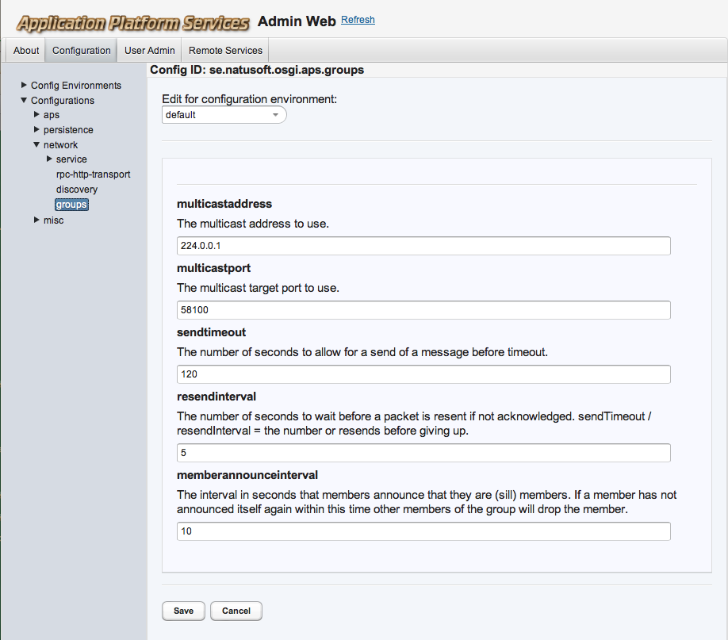

Provides network groups where named groups can be joined as members and then send and receive data messages to the group. This is based on multicast and provides a verified multicast delivery with acknowledgements of receive to the sender and resends if needed. The sender will get an exception if not all members receive all data. Member actuality is handled by members announcing themselves relatively often and will be removed when an announcement does not come in expected time. So if a member dies unexpectedly (network goes down, etc) its membership will resolve rather quickly. Members also tries to inform the group when they are doing a controlled exit.
Please note that this does not support streaming! That would require a far more complex protocol. APSGroups waits in all packets of a message before delivering the message.
The APSGroupsService can be used as an OSGi service and as a standalone library. This section describes the service.
APSServiceTracker<APSGroupService> apsGroupsServiceTracker =
new APSServiceTracker<APSGroupsService>(bundleContext, APSConfigService.class,
APSServiceTracker.LARGE_TIMEOUT);
APSGroupsService apsGroupsService = apsGroupsServiceTracker.getWrappedService();
GroupMember groupMember = apsGroupsService.joinGroup(”mygroup”);
To send a message you create a message, get its output stream and write whatever you want to send on that output stream, close it and then send it. Note that since the content of the message is any data you want, all members of the groups must know how the data sent looks like. In other words, you have to define your own message protocol for your messages. Note that you can wrap the OutputStream in an ObjectOutputStream and serialize any java object you want.
Message message = groupMember.createNewMessage();
OutputStream msgDataStream = message.getOutputStream();
try {
...
msgDataStream.close();
groupMember.sendMessage(message);
}
catch (IOException ioe) {
...
}
Note that the groupMember.sendMessage(message) does throw an IOException on failure to deliver the message to all members.
To receive a message you have to register a message listener with the GroupMember object.
MessageListener msgListener = new MyMsgListener();
groupMember.addMessageListener(myMsgListener);
and then handle received messages:
public class MyMsgListener implements MessageListener {
public void messageReceived(Message message) {
InputStream msgDataStream = message.getInputStream();
...
}
}
apsGroupsService.leaveGroup(groupMember);
The bundle jar file can also be used as a library outside of an OSGi server, with an API that has no other dependencies than what is in the jar. The API is then slightly different, and resides under the se.natusoft.apsgroups package.
APSGroups apsGroups = new APSGroups(config, logger);
apsGroups.connect();
The config passed as argument to APSGroups will be explained further down under ”Configuration”.
The logger is an instance of an implementation of the APSGroupsLogger interface. Either you provide your own implementation of that or your use the APSGroupsSystemOutLogger implementation.
GroupMember groupMember = apsGroups.joinGroup(”mygroup”);
Sending and receiving works exactly like the OSGi examples above.
apsGroups.leaveGroup(groupMember);
apsGroups.disconnect();
All APSGroups instances connected will try to sync their time. I call this synced time ”net time”.
It works like this: When an APSGroups instance comes up it waits a while for NET_TIME packets. If it gets such a packet then it enters receive mode and takes the time in the received NET_TIME packet and stores a diff to that time and local time. This diff can then be used to translate back and forth between local and net time. If no such packet arrives in expected time it enters send mode and starts sending NET_TIME packets itself using its current net time. If a NET_TIME packet is received when in send mode it directly goes over to listen mode. If in listen mode and no NET_TIME packet comes in reasonable time it goes over to send mode. So among all instances on the network only one is responsible for sending NET_TIME. If that instance leaves then there might be a short fight for succession, but it will resolve itself rather quickly.
The GroupMember contains a few create* methods to produce a NetTime object instance. See the API further down for more information on these.
The OSGi service provides a configuration model that gets managed by the APSConfigService. It can be configured in the APS adminweb (http://host:port/apsadminweb/). Here is a screenshot of the config admin:

The library wants an implementation of the APSGroupsConfig interface as its first argument to APSGroups(config, logger) constructor. Either you implement your own or use the APSGroupsConfigProvider implementation. This is a plain java bean with both setters and getters for the config values. It comes with quite reasonable default values. It contains exactly the same properties as shown in the picture above.
public interface APSGroupsService [se.natusoft.osgi.aps.api.net.groups.service] {
A service that lets clients send data reliable to all members of a group on any host. There is no limit on the size of the data sent, but that said I wouldn't send MB:s of data!
GroupMember joinGroup(String name) throws IOException
Joins a group.
Returns
A GroupMember that provides the API for sending and receiving data in the group.
Parameters
name - The name of the group to join.
Throws
java.io.IOException - The unavoidable one!
void leaveGroup(GroupMember groupMember) throws IOException
Leaves as member of group.
Parameters
groupMember - The GroupMember returned when joined.
Throws
java.io.IOException - The unavoidable one!
}
public interface GroupMember [se.natusoft.osgi.aps.api.net.groups.service] {
This is the API for APSGroupsService members received when they join a group. It is used to send and receive data messages to/from the group.
void addMessageListener(MessageListener listener)
Adds a listener for incoming messages.
Parameters
listener - The listener to add.
void removeMessageListener(MessageListener listener)
Removes a listener for incoming messages.
Parameters
listener - The listener to remove.
Message createNewMessage()
Creates a new Message to send. Use the sendMessage() method when ready to send it.
void sendMessage(Message message) throws IOException
Sends a previously created message to all current members of the group. If this returns without an exception then all members have received the message.
Parameters
message - The message to send.
Throws
java.io.IOException - On failure to reach all members.
UUID getMemberId()
Returns
The ID of the member.
List<String> getMemberInfo()
Returns information about members.
NetTime getNow()
Returns
The current time as net time.
NetTime createFromNetTime(long netTimeMillis)
Creates from milliseconds in net time.
Parameters
netTimeMillis - The net time milliseconds to create a NetTime for.
NetTime createFromNetTime(Date netTimeDate)
Creates from a Date in net time.
Parameters
netTimeDate - The Date in net time to create a NetTime for.
NetTime createFromLocalTime(long localTimeMillis)
Creates from milliseconds in local time.
Parameters
localTimeMillis - The local time milliseconds to create a NetTime for.
NetTime createFromLocalTime(Date localTimeDate)
Creates from a Date in local time.
Parameters
localTimeDate - The Date in local time to create a NetTime for.
}
public interface Message [se.natusoft.osgi.aps.api.net.groups.service] {
This represents a complete message containing any data you want to send to the group. You provide the message with data using the OutputStream, and read message data using the InputStream.
OutputStream getOutputStream()
Returns an OutputStream to write message on. Multiple calls to this will return the same OutputStream!
InputStream getInputStream()
Returns an InputStream for reading the message. Multiple calls to this will return new InputStream:s starting from the beginning!
UUID getId()
Returns the id of this message.
String getMemberId()
Returns
id of member as a string.
String getGroupName()
Returns
The name of the group this message belongs to.
}
public interface MessageListener [se.natusoft.osgi.aps.api.net.groups.service] {
For listening on messages from the group.
public void messageReceived(Message message)
Notification of received message.
Parameters
message - The received message.
}
public interface NetTime extends Serializable [se.natusoft.osgi.aps.api.net.groups.service] {
This represents a common network time between members for handling date and time data. The net time is synchronized between all members. Each receiver of net time diffs it with local time and stores the diff so that they can convert to/from local/net time.
public long getNetTime()
Returns the number of milliseconds since Januray 1, 1970 in net time.
public Date getNetTimeDate()
Returns the net time as a Date.
public Calendar getNetTimeCalendar()
Returns the net time as a Calendar.
public Calendar getNetTimeCalendar(Locale locale)
Returns the net time as a Calendar.
Parameters
locale - The locale to use.
public Date getLocalTimeDate()
Converts the net time to local time and returns as a Date.
public Calendar getLocalTimeCalendar()
Converts the net time to local time and returns as a Calendar.
public Calendar getLocalTimeCalendar(Locale locale)
Converts the net time to local time and returns as a Calendar.
Parameters
locale - The locale to use.
}